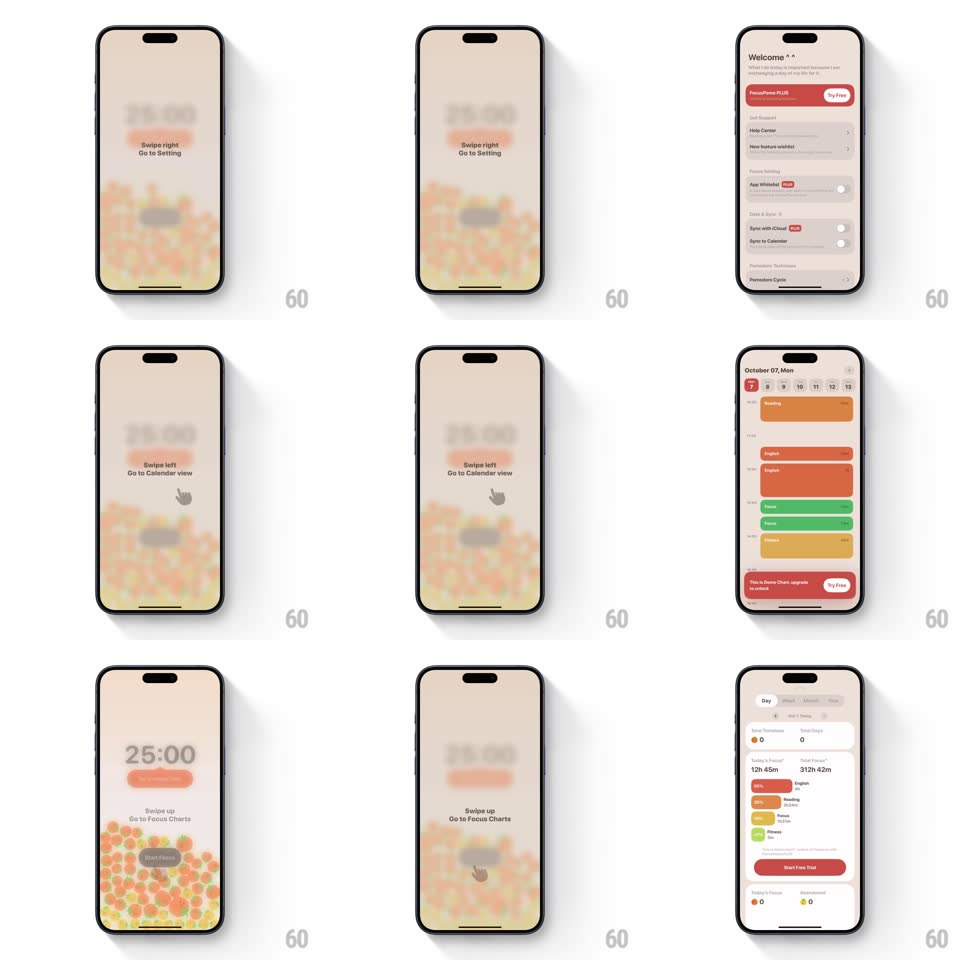

Media
Frame-by-frame

Rebuild this interaction 1:1: FocusPomo's gesture onboarding - over the blurred tomato-pit timer screen, sequential gesture tutorials coach each swipe: "Swipe right / Go to Setting" with an animated hand indicator, "Swipe left / Go to Calendar view", "Swipe up / Go to Focus Charts" - and performing each gesture slides the real screen in (settings list, calendar with colored event blocks, charts with stat cards).

Rebuild this interaction 1:1: FocusPomo's gesture onboarding - over the blurred tomato-pit timer screen, sequential gesture tutorials coach each swipe: "Swipe right / Go to Setting" with an animated hand indicator, "Swipe left / Go to Calendar view", "Swipe up / Go to Focus Charts" - and performing each gesture slides the real screen in (settings list, calendar with colored event blocks, charts with stat cards). ## Integration Integration: stack-agnostic spec - springs given as stiffness/damping, timed motions as duration + curve; map every value to your framework and animation library of choice. ## Scene The timer screen (25:00 over the tomato pit) sits blurred and dimmed behind each tutorial card: centered gesture label, destination line, and a white hand/drag indicator. Destinations: settings list, calendar day view (colored event blocks), focus charts (stat cards, bars). ## Motion spec Pattern: coached gesture with live destination reveal. - Each tutorial step fades in (label + indicator, 250ms) over the blurred timer. - The hand indicator loops the gesture: it presses, drags in the coached direction (300px travel, 900ms, ease-in-out), and releases, fading and repeating every ~1.6s. - When the user swipes: the destination screen slides in from the coached edge, tracking the finger 1:1, then springs to full screen (spring ~380/24, 350ms); the tutorial card fades out as the drag begins. - On the destination, a brief dwell (~1.2s) then the next tutorial card fades in over it; the sequence continues (right -> settings, left -> calendar, up -> charts). - After the last gesture, the onboarding dismisses (fade, 300ms) back to the sharp timer screen. ## Calibration - The blur+dims behind each card are heavy enough that the hand indicator is unmistakable. - The destination screens track the finger - a scrubbed reveal, not an autoplay. ## Reduced motion Hand indicator pulses in place without traveling; destinations crossfade (250ms). ## Don't miss - Each card teaches exactly one gesture - direction, label, and destination must match. - The timer's tomato pit stays visible (blurred) behind every card - the context never disappears.